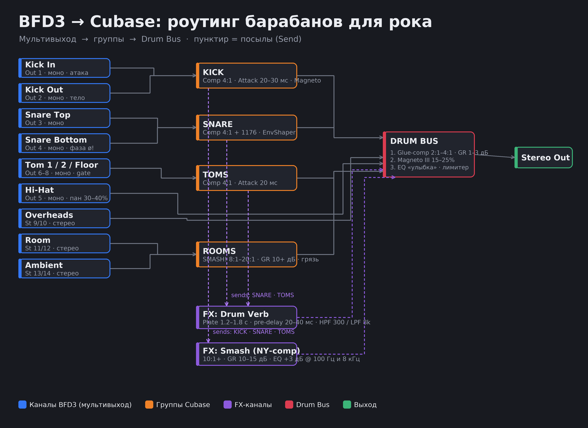

1Мультивыход BFD3 → Cubase
2Структура групп в Cubase

4Поканальная обработка
🦵 Бочка (KICK)
🥁 Рабочий (SNARE)
🛢️ Томы (TOMS)
🎩 Хэт
☁️ Оверхеды (OH)
🏠 Room / Amb (ROOMS) — «размер» барабанов
5Параллельная компрессия (Smash)
6Реверберация (Drum Verb)
❌ Типичные ошибки
- Сведение стереовыхода BFD3 вместо мультивыхода
- Забытая полярность Snare Bottom
- Слишком быстрая атака компрессора на бочке/рабочем — убивает панч
- Полностью вырезанный bleed — «мёртвый» звук
- Реверб без HPF — каша внизу